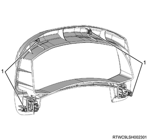

PESS control unit removal (All models)
1. PESS control unit safety information
Caution
- When replacing the PESS control unit, make sure to write vehicle information into the new PESS control unit.
- When replacing the PESS control unit, refer to the following before removal and upload the PESS control unit internal data to the scan tool before replacement.
- If communication with the scan tool cannot be established, remove as is.
- During replacement operations, the same scan tool must be used from start to finish. If the scan tool is changed midway, information cannot be written correctly.
1. Check specification of vehicle.
Note
- When replacing the PESS control unit, it is necessary to perform this operation.
2. PESS control unit upload
Note
- When replacing the PESS control unit, it is necessary to perform this operation.
- If the PESS control unit to be replaced cannot establish communication with the scan tool, do not perform this operation.
Upload Vehicle Configuration Data
1. Connect the scan tool to the DLC.
2. Turn ON the ignition switch.
3. Select Diagnostics.
4. Select Body.
5. Select PESS.
6. Select Programming.
7. Select Upload Vehicle Configuration Data.
Note
- Operate by following the on-screen instructions.
8. Turn OFF the ignition switch.
Note
- Turn OFF the ignition switch for 30 seconds.
- Verify that the engine does not start with all electronic keys.
3. Battery ground cable disconnect
1. Disconnect the battery ground cable from the battery.
Caution
- Do not disconnect within 1 minute after turning OFF the ignition switch.
4. Meter cluster removal
1. Remove the meter cluster from the instrument panel.
Note
- Pull out the 4 clips from the instrument panel.
- Disconnect the switch connector.

- Clip
5. Instrument panel cluster removal
1. Remove the instrument panel cluster from the instrument panel.

- Instrument panel cluster
6. PESS control unit removal
1. Remove the PESS control unit from the instrument panel.
Note
- Disconnect the harness connector by pulling it towards you.
- PESS control unit
- Bracket